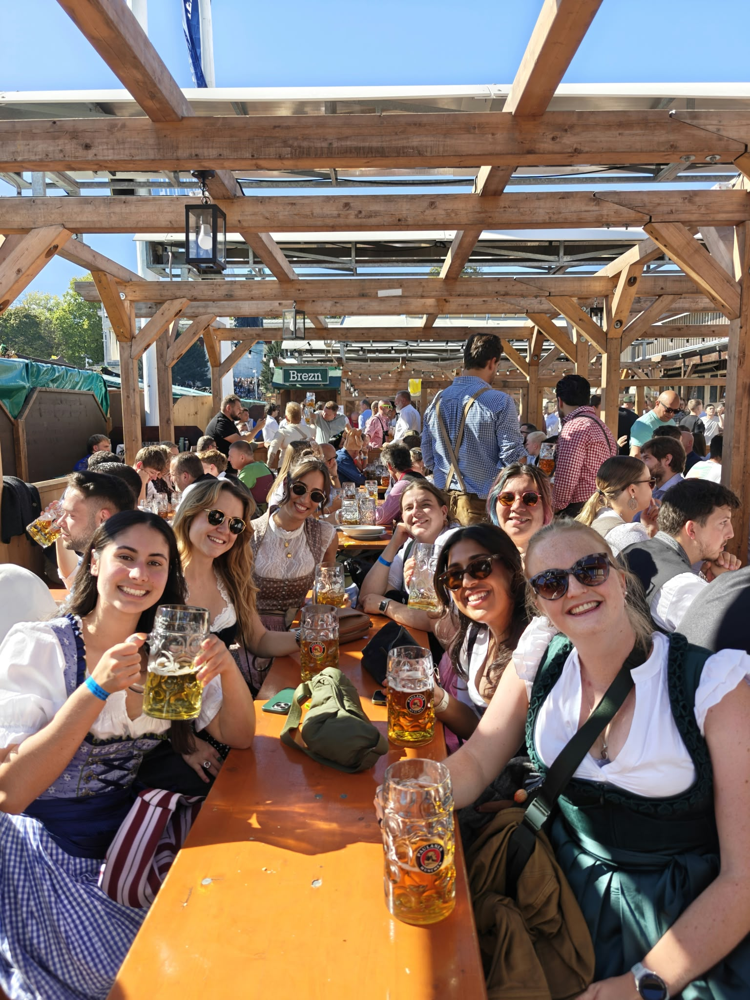
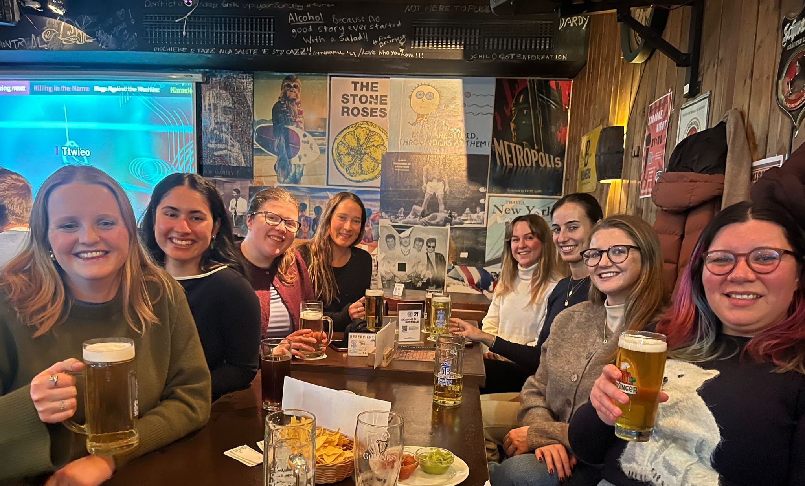

Semi-Annual Payment
Two €30 installments, with the second payment due after the Fasching break in February. Great for those staying in Munich for a shorter period.
Come meet the team
Whether you’ve just moved to Munich, looking for a new club, or are getting back into netball after some time away, our first free session is the perfect opportunity to meet the team and experience a training session before deciding whether it’s the right fit for you.
Expect fun drills, game time and a great team atmosphere. Just bring your court shoes, comfortable sportswear and a water bottle and get ready to play!
No commitment — just come along, play some netball and see what our team is all about!
Sessions are for players aged 18 or over who already know the rules of netball.
Get in touch to arrange your free first session.
Message us on InstagramBecome part of the team
Once the free session is completed, you can join as a member. In order to cover the costs of the hall hire, equipment and entry to occasional tournaments, we ask for an annual contribution of €60 per player. The fee covers our annual season from September 2026 to July 2027. We have two payment types. Their details and fees are below.
Everyone joining the club will need to complete our registration form.
Registration FormGetting to training
Our hall is at Sophie Scholl Gymnasium, directly on Karl-Theodor-Straße; go through the big green gate to the right of the hall and turn left. Follow the sounds of squeaky trainers on the sports hall floor.
Good times on and off court
A few snapshots of what we get up to as a team.


.jpg)